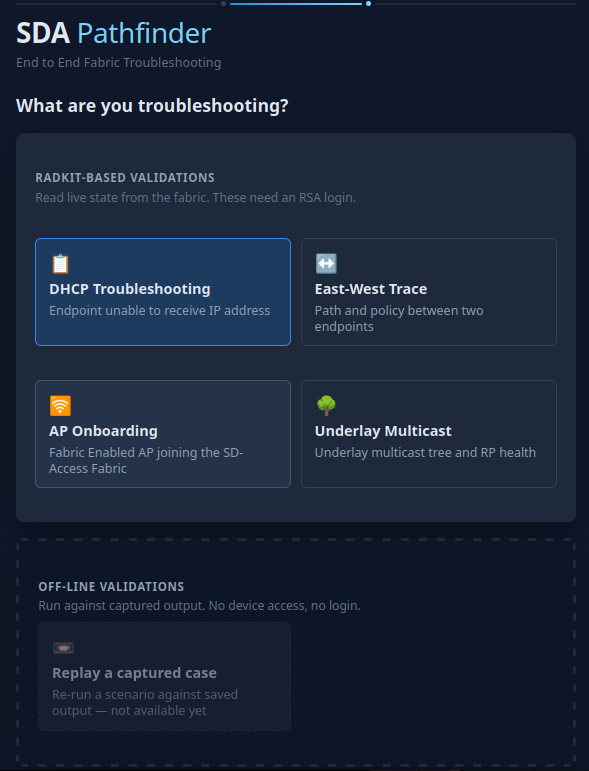
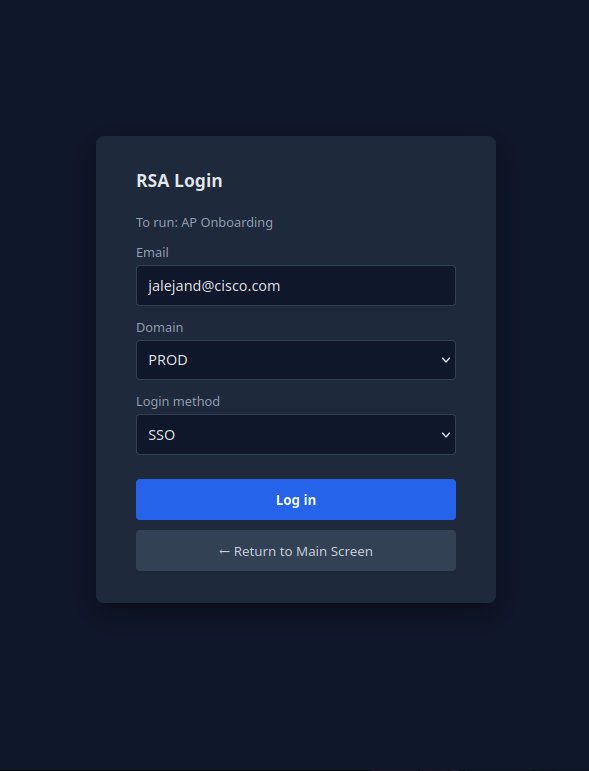
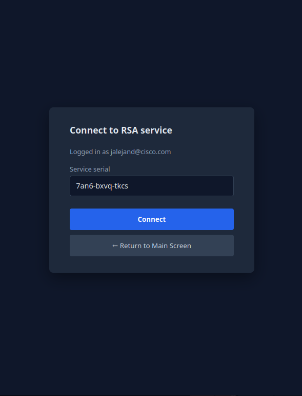
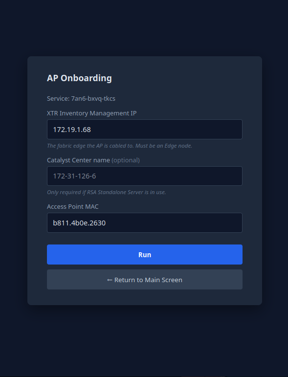
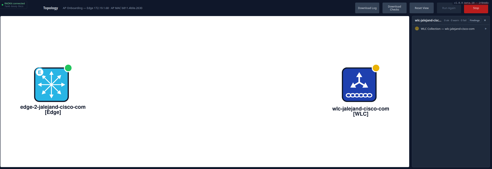
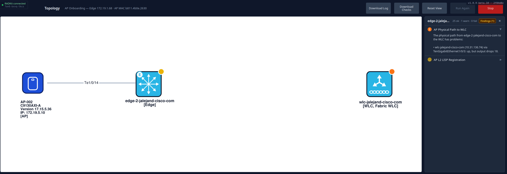
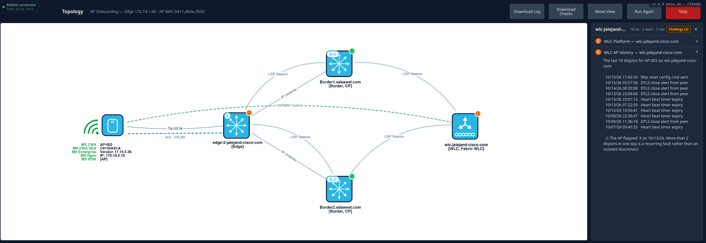
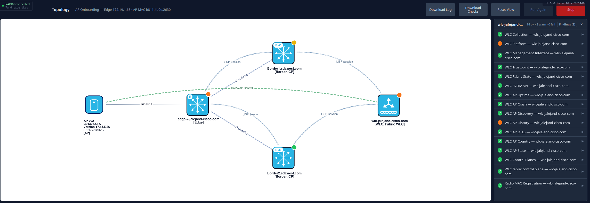

Cisco TAC · SD-Access
How to run the AP Onboarding workflow, read the topology it draws, and find the command output behind every finding.
SDA Pathfinder answers one question per workflow by reading live state off the fabric and grading it. The AP Onboarding workflow answers: why is this access point not joining, or not serving the SSIDs it should?
It logs into the devices through RADKit, runs around forty read-only show commands across the fabric edge, the WLC and the control planes, and turns the output into individually graded checks. Nothing is ever configured. The result is a topology you click through, where each node carries the verdict for the checks that ran against it.
The value over doing this by hand is sequencing. The checks run in dependency order and stop a chain when its precondition fails, so you get the first thing that actually broke instead of fifty downstream symptoms.
show ap summary index by, and it is what the tool expects. They differ, usually in the last octet.
The landing page splits workflows by whether they need device access. The four RADKit-based ones read live state and need an SSO login. The off-line section is for replaying captured output and is not available yet.

Enter your Cisco address, leave the domain on PROD unless you have been told otherwise, and use the SSO login method. The page tells you which workflow you are authenticating for.

Enter the serial of the RADKit service that fronts the fabric you are troubleshooting. If you support several customers, this is the field that selects between them.


| Field | What it is |
|---|---|
| XTR Inventory Management IP | The management IP of the fabric edge the AP is physically cabled to. It must be an Edge node — a Border will not do, because the access tunnel and L2 LISP registration the tool checks live on the edge. |
| Catalyst Center name | Only needed when an RSA Standalone Server is in use. Leave it blank otherwise. |
| Access Point MAC | The AP's Ethernet MAC, in any common format. |
Press Run. Checks begin streaming immediately; you do not wait for the whole run to finish before reading results.
The canvas builds as the run proceeds. Devices appear once they are discovered, and links appear once the tool has evidence for them. An empty area is not a missing device — it is a device the tool has not reached yet.

Every device carries one coloured dot in its top-right corner. It reflects the worst result among the checks that ran against that device, so a single amber check turns the node amber.
| Badge | Status | Meaning |
|---|---|---|
| Pending | Queued, not started. | |
| Running | Executing now. | |
| OK | Verification passed. | |
| Warn | A real concern, but the tool could continue. Most fabric faults land here. | |
| Fail | The check could not complete, and downstream checks may be unsafe. Later checks in that chain are skipped. | |
| Skip | Not applicable to this run, or skipped because something upstream failed. |
Each node is labelled with its hostname and its fabric roles in brackets. A device holding several roles shows all of them, and a combined Border plus Control Plane carries a B+C glyph on its icon. Roles are promoted during the run as evidence arrives: the WLC starts as [WLC] and becomes [WLC, Fabric WLC] once the tool confirms it is fabric-enabled.
Te1/0/14 and labelled with model, software version and IP. The WLC is now [WLC, Fabric WLC]. Its expanded Warn states the facts it read, then what they mean for onboarding.Click any device to open its findings panel. The tally in the panel header is scoped to that node, not to the whole run, so the numbers change as you click around. The panel lists every check that ran against the device; click a row to expand its full output.

Findings are written to be read on their own. They name the device, the interface and the measured value, so you can paste one into a case note without rewriting it. A graded finding states what was read first, then what it means — the WLC Platform example above lists the platform, uptime and redundancy state, then explains that HA is configured but not operating as a pair, that onboarding is unaffected, and what would break on a failover.
When the AP is on air with fabric SSIDs, a green WiFi mark appears beside it, labelled with the SSID names. This is the fastest answer to "is this AP actually serving the fabric WLANs" — if the mark is absent, it is not, whatever the WLC configuration says.

Links are labelled with what they represent. Solid lines are physical; dotted lines are protocol relationships the tool verified.
Te1/0/14) — the physical cable from the AP to its edge.
[Border, CP], LISP sessions fanned from the edge, and the WLC's sixteen checks in the panel.| Button | What you get |
|---|---|
| Download Log | collection_logfile.txt — the raw command output, every command the run issued and everything the devices returned. This is what you attach to a case or read when you disagree with a verdict. |
| Download Checks | A PDF of the graded checks and their findings. Suitable for a case note or a customer summary. |
| Reset View | Re-lays out the canvas. Useful after dragging nodes around. |
| Run Again | Re-runs the same inputs. Enabled once a run finishes. |
| Stop | Halts a run in progress. Checks already completed keep their results. |
The build version and commit are shown in the top-right of the topology header. Quote them when reporting a problem with the tool itself.
All read-only. No configuration is ever sent to a device. Placeholders are shown in angle brackets. Catalyst Center API calls are not listed here.
| Command | Purpose |
|---|---|
| show ap summary | Locate the AP by Ethernet MAC; name, model, IP, state |
| show ap name <ap-name> config general | Uptime, tags, mode, CAPWAP state |
| show ap name <ap-name> config slot <slot> | Per-radio state, role and admin status |
| show ap uptime | AP uptime and last reboot |
| show ap crash-file | Crash records for the AP |
| show ap wlan summary | What the AP is actually broadcasting |
| show wlan summary | Every WLAN the controller offers |
| show fabric wlan summary | Which WLANs are fabric-enabled |
| show wireless tag policy detailed <policy-tag> | WLANs the AP's policy tag entitles |
| show wireless fabric summary | Controller fabric state and its control planes |
| show wireless dtls connections | AP DTLS session to the WLC |
| show wireless country configured | Regulatory domain |
| show wireless stats ap discovery | AP discovery and join attempts |
| show wireless stats ap history | Join and disjoin history, for the flap check |
| show crypto pki certificates <trustpoint> | WLC trustpoint validity |
| Command | Purpose |
|---|---|
| show interface <port> | The AP's switchport: state, errors, counters |
| show run | include device classifier | Device classifier enabled for AP onboarding |
| show access-tunnel summary | VXLAN access tunnel to the AP |
| show access-tunnel statistics | Tunnel counters |
| show l2lisp statistics | L2 LISP activity on the edge |
| show idb all | Interface descriptor blocks |
| show switch | Stack membership |
| show logging | Syslog around the onboarding window |
| show ip cef <ap-ip> internal | Forwarding entry for the AP's address |
| Command | Purpose |
|---|---|
| show lisp instance-id <iid> ethernet database | L2 EID database |
| show lisp instance-id <iid> ethernet database <mac> | The AP's L2 registration |
| show lisp instance-id <iid> ethernet database wlc <mac> | Radio MAC registration and WLC metadata |
| show lisp instance-id <iid> ethernet server <radio-mac> | Radio MAC as seen by the map-server |
| show lisp instance-id <iid> ipv4 | L3 instance state |
| show lisp instance-id <iid> ipv4 database <ap-ip>/32 | The AP's L3 registration |
| show lisp instance-id <iid> dynamic-eid <ap-ip> | Dynamic-EID entry |
| show lisp instance-id <iid> <af> statistics | Map-register and map-reply counters |
| show lisp instance-id <vnid> ethernet | i EID table | VNID to EID-table mapping |
| show lisp eid-table vlan <vlan> dynamic-eid summary | Dynamic-EID by VLAN |
| show lisp service ipv4 | LISP session state to the control planes |
| show lisp vrf | VRF to instance mapping |